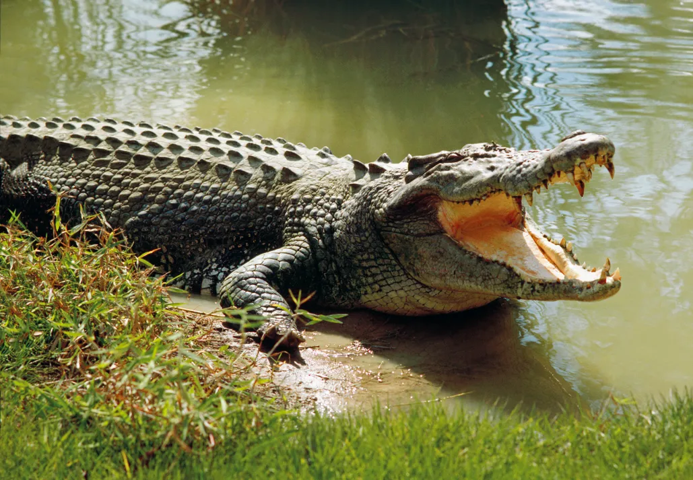

There are many reptiles in the world but only some can be seen in a zoo.
Torstoise
Tortoises have been around for over 230 million years – longer than lizards, birds, mammals, crocodiles and snakes.
Turtles can live in most climates that are warm enough for them to breed. They live on every single continent except Antarctica!
The hard scales that make up the outer shell of a tortoise are made of the same keratin as human fingernails. This protects against injury, damage and infection.
Crocodiles

Crocodiles are known for their impressive size. The largest species, the saltwater crocodile, can reach lengths of up to 20 feet (6 meters) and weigh over 2,000 pounds (907 kilograms).
They also have a long lifespan, with some individuals living for more than 70 years.
Crocodiles have one of the strongest bite forces in the animal kingdom. The muscles that close their jaws are incredibly powerful, allowing them to exert tremendous pressure when capturing prey.
Snakes
Ever wondered why snakes might give you an eerie feeling? They don’t have eyelids! This means they don’t blink and have to sleep with their eyes wide open.
Snakes do have nostrils, but they don’t use them to smell. Instead they have evolved to smell with their tongue and by using their Jacobson’s organ in the roof of their mouth.
Snakes shed their skin between 4 and 12 times a year.